News
Serate, eventi, corsi e avvisi della sezione: tutte le notizie, dalla più recente.

2026

Gio 15.10.2026 – (S)LEGATI L’incredibile storia degli alpinisti Joe Simpson e Simon Yates / SERATA GRATUITA
Il 15 ottobre in collaborazione con il CAS Bellinzona, il CAS Locarno e la FAT organizziamo uno spettacolo teatrale presso il Centro parrocchiale di Lamone con: (S)LEGATI Uniti dalla stessa corda, legati alla montagna…

RICHIAMO DEL PRODOTTO QUICKDRAWS SIMOND ALPINISM / VERTIKA
Richiamo prodotto. Informazioni importanti sulla vostra sicurezza e sull’attrezzatura. Avete acquistato un rinvio da arrampicata ALPINISM e/o VERTIKA tra il 1° gennaio 2022 e il 23 luglio 2026. Rinvio Alpinism 11 cm…

INFO riservazione CAPANNE
Le nostre capanne sono gestite in modo autonomo dai rispettivi custodi. Per qualsiasi domanda relativa al suo soggiorno, la preghiamo di rivolgersi direttamente alla capanna di suo interesse. Per effettuare una…

Settimana OG (24/28 agosto) – Alpinismo, arrampicata e tanto divertimento
Quando? Da lunedì 24 a venerdì 28 agosto – OG Per chi? Dedicata al gruppo OG: dai 16 ai 25 anni Prezzo 400 .- Capigita Claudio Petrini Esigenze Tecniche – PD La settimana sarà organizzata in modo che le ragazze e i…

Mercatino dell’usato + Assemblea Generale 2026
Caro Socio, abbiamo il piacere di invitarti alla 141. ma Assemblea Generale Annuale che avrà luogo: domenica 10 maggio 2026 alle ore 18:00 Centro Parrocchiale Via Girella 41 6814 Lamone alle 15.00 mercatino dell’usato…
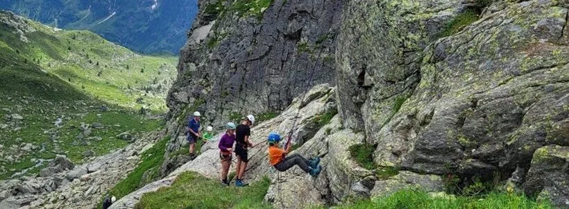
Settimana Spider (da 10 ai 14 anni) – zona capanna Campo Tencia
Data : da domenica 28 giugno a sabato 4 luglio 2026 Gruppo giovani: dai 10 ai 14 anni Capigita Giosiana Codoni (079 509 78 73) Nicola Martinoni Settimana in cui i partecipanti si cimenteranno con arrampicate, belle…
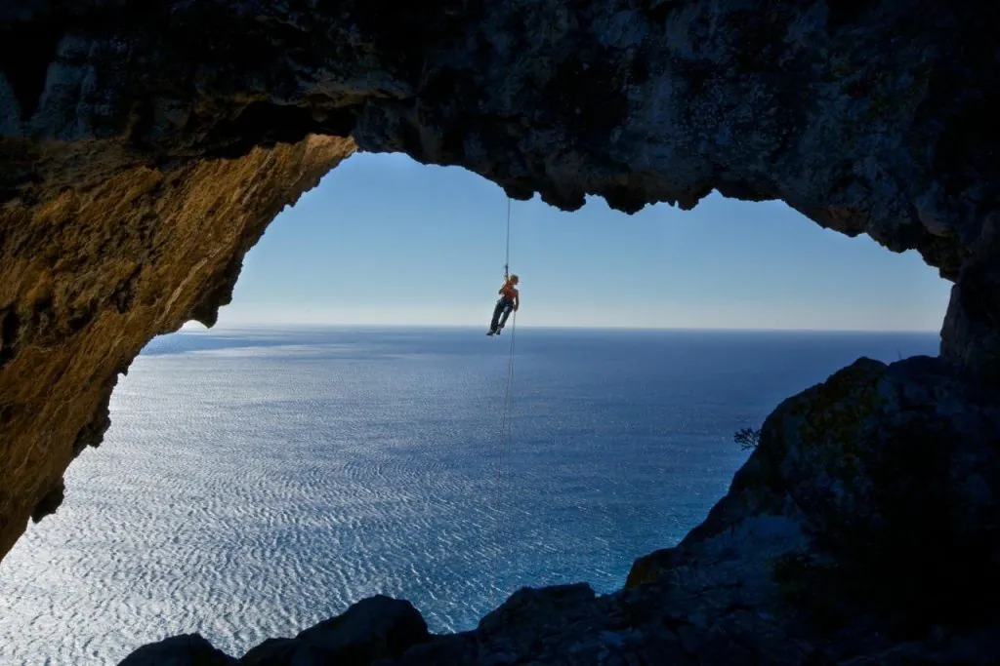
Corso base di arrampicata
Vuoi avvicinarti al mondo dell’arrampicata su roccia (oppure vuoi consolidare le tue conoscenze) allo scopo di essere in grado di portare a termine una via a più lunghezze di corda in modo autonomo? Il corso base di…

Sostieni il gruppo OG del CAS Ticino
Aiuta il gruppo OG del CAS Ticino con i buoni “Support My Camp” della Migros! Hai ricevuto dei buoni “ Support My Camp ” alla Migros? Puoi trasformarli in un aiuto concreto per il nostro gruppo OG del CAS Ticino! Come…

Islanda da esplorare
Vuoi partecipare a un’esplorazione scialpinistica nel Nord Islanda? L’uscita CAS è prevista da venerdì 13 a venerdì 20 marzo 2026. Non perdere questa magnifica occasione! Iscriviti alla gita Programma Venerdì 13 marzo…
2025

Campo Vallemaggia diventa Villaggio degli alpinisti
La genuina comunità ticinese convince con un turismo vicino alla natura. Silenzioso, appartato e impressionante: chi visita Campo Vallemaggia incontra l’autenticità nel mezzo di un selvaggio mondo alpino. Il Comune…

Informazioni sull’affiliazione
Andare insieme in montagna condividendo la gioia per il mondo alpino – il CAS unisce le persone appassionate della montagna, giovani e meno giovani. Siamo felici che anche tu appartenga alla più grande famiglia degli…

Festa conviviale della Sezione
Mercoledì 10.12.2025 – Festa conviviale della Sezione Vi aspettiamo numerosi, mercoledì 10.12.2025, dalle 18:30 da Bächli Sport a Contone. Ospite – Mario Casella , scrittore, giornalista, guida alpina, documentarista e…

Invito alle anteprime del film “La leggerezza sommersa”
Siete tutti invitati alle anteprime del nuovo film “La leggerezza sommersa” , che si terranno: Mercoledì 29 ottobre, ore 20.15 – Cinema LUX, Massagno Giovedì 30 ottobre, ore 20.15 – PALACINEMA, Locarno Clicca qui per…

Domenica 26 ottobre – Escursione in MTB nel Mendrisiotto
Vivi il tuo Ticino, in collaborazione con CAS Ticino, organizza per domenica 26 ottobre un’escursione in mountain bike alla scoperta del Mendrisiotto nella stagione del foliage. PROGRAMMA Domenica 26 ottobre…

Sab 13 settembre – Vivi il tuo Ticino Escursione nella Valle della Piumogna
Vivi il tuo Ticino, in collaborazione con CAS Ticino e Mountain Muses (Pierre Crivelli), organizza, sabato 13 settembre 2025, un’escursione nella regione della Valle della Piumogna. La giornata ha come scopo quello di…

Sabato 4 ottobre – Gita culturale al Dazio Grande
Sabato 4 ottobre proponiamo una visita alla mostra Après lift, versante sud. La mostra si prefigge di indagare il turismo invernale al sud delle Alpi e i suoi risvolti ambientali, sociali ed economici. Autori Nicola…

20-21 settembre / gita culturale
Le Sezioni del CAS BELLINZONA E VALLI, CAS LOCARNO, CAS TICINO e la Federazione Alpinistica Ticinese (FAT) propongono per il 20 e 21 settembre 2025 un fine settimana tra CULTURA e MONTAGNA al COLLE DELLA GEMMI sopra…

IMPORTANTE – ANNULLATA FESTA – Capanna Adula 100+1 dom. 31 agosto
Comunicato importante riguardo i festeggismenti per i 100+1 anni capanna Adula. Con grande dispiacere per cause di forza maggiore ci vediamo costretti a comunicarvi che domenica 31 agosto la festa non avrà luogo…
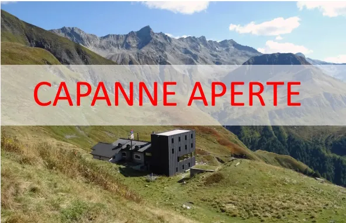
Tutte le nostre capanne sono aperte e custodite – vi aspettiamo
Capanna ADULA: capannaadula.casticino.ch Capanna Cristallina: capannacristallina.casticino.ch Capanna Motterascio: capannamotterascio.casticino.ch Capanna Campo Tencia: campotencia.casticino.ch Capanna Monte Bar…

È arrivata la nuova mappa dei rifugi SAC
Ispirazione e aiuto per la pianificazione del vostro prossimo tour dei rifugi. Disponibile ora: La carta delle capanne delle Alpi svizzere, completamente rielaborata, presenta 250 rifugi e offre condizioni speciali per…
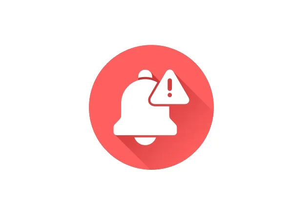
NUOVO Statuto Sezionale
Statuto 2025 vs. 2017 a confronto (2)
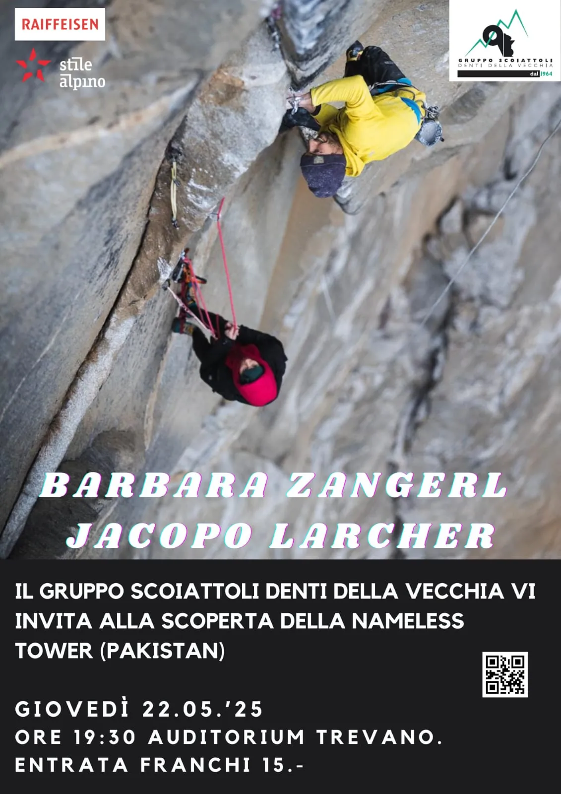
Giovedì 22 maggio alle 19:30 – spedizione alla Namless Tower, con Jacopo Larcher e Barbara Zangerl
Giovedi 22 maggio ci sarà una serata speciale con Jacopo Larcher e Barbara Zangerl all’auditorium di Trevano. Si parlerà della loro spedizione alla Namless Tower.
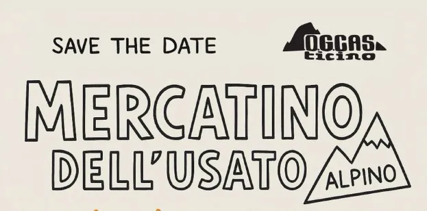
Dom 18 maggio (14:00 – 18:00) MERCATONE DELL’USATO + “Bederetto Tour” di e con Filippo Sala
Non mancare al MERCATONE DELL’USATO proposto dal nostro gruppo GIOVANI. Si può vendere a favore delle proprie tasche oppure donare al gruppo OG che si occuperà di vendere oppure vendere in privato e poi donare al…
Invito Assemblea 2025 – ven 23 maggio alle ore 18.30
Caro Socio abbiamo il piacere di invitarti alla 140 .ma Assemblea Generale Annuale che avrà luogo venerdì 23 maggio 2025 alle ore 18.30 presso la sede del CAS Ticino Canvetto Luganese Via R. Simen 14, Lugano a seguire…
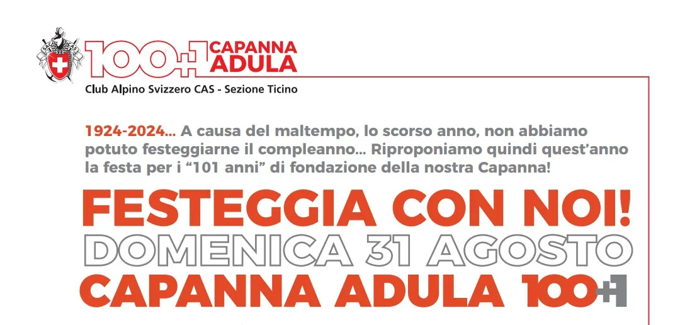
Capanna Adula 100+1 / FESTEGGIA CON NOI dom. 31 agosto
1924-2024… A causa del maltempo, lo scorso anno, non abbiamo potuto festeggiarne il compleanno… Riproponiamo quindi quest’anno la festa per i “101 anni” di fondazione della nostra Capanna! Domenica 31 agosto (in caso di…
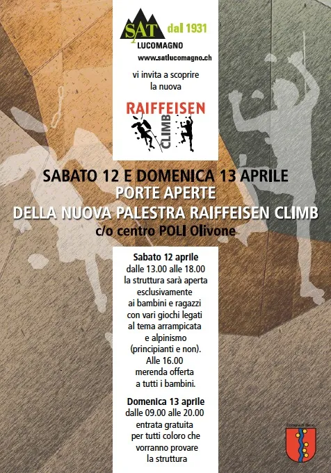
Sab 12 e Dom 13 aprile – Porte aperte nuova palestra olivone

Corso base arrampicata su roccia – pochi posti liberi
ATTENZIONE: Ultimi 7 posti liberi per il corso di arrampicata. Per le iscrizioni vedi link: https://ssl.dropnet.ch/casticino/gite/index.php?page=detail&touren_nummer=1632 DETTAGLI DEL CORSO: CORSO BASE di ARRAMPICATA su…
Black Diamond – richiamo Recon LT Avalanche Transceiver
Innsbruck, Austria (14 febbraio 2025) – Black Diamond Equipment®, in concomitanza con il Regolamento europeo sulla sicurezza generale dei prodotti, sta richiamando il ricetrasmettitore da valanga Black Diamond Recon LT…

Il Capo Nord del Ticino. Con le racchette all’Alpe di Prato
Nel versante a bacìo di Airolo è di casa il freddo. Persino il formaggio del suo alpeggio porta la pelliccia e nomi come «Fiocco di neve». Una gita con le racchette da neve al Rifugio Garzonera fa conoscere la pace…
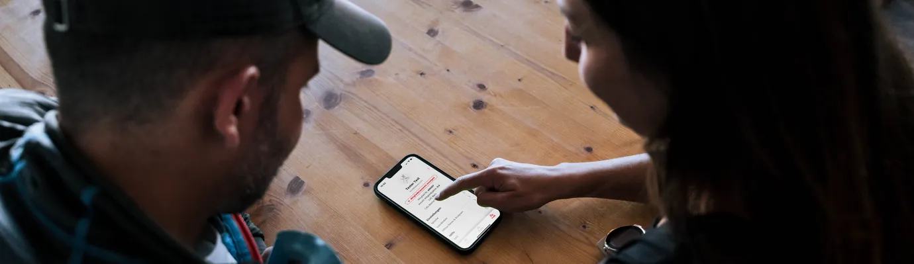
Tessera soci digitale sempre a portata di mano con l’app SAC-CAS –> Aggiorna subito
Una nuova versione dell’app SAC-CAS è disponibile giusto in tempo per la stagione invernale. Con l’introduzione del nuovo portale CAS a gennaio 2025, per poter continuare a utilizzare tutti i servizi del CAS è…
Richiamati i ricetrasmettitori per valanghe PIEPS Pro IPS e Mammut Barryvox 2 e Barryvox S2
PIEPS tutte le info: https://www.recallswiss.admin.ch/customer-access/#Recalls/733 In collaborazione con l’Ufficio federale delle comunicazioni (UFCOM), la società Pieps richiama i ricetrasmettitori per valanghe PIEPS…
2024
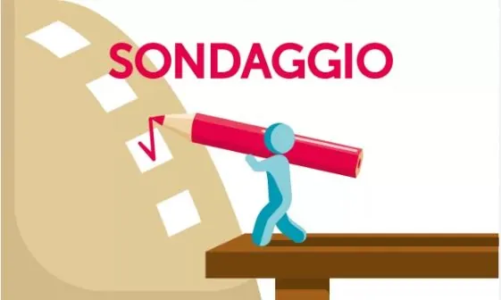
Sondaggio Evento Ski Test – Vorresti partecipare?
Caro Socio, Le società CAS Ticino, CAS Bellinzona, CAS Locarno e SEV, in collaborazione con il negozio Bächli di Contone, a carattere informativo , desiderano raccogliere l’interesse dei Soci nel partecipare a una…
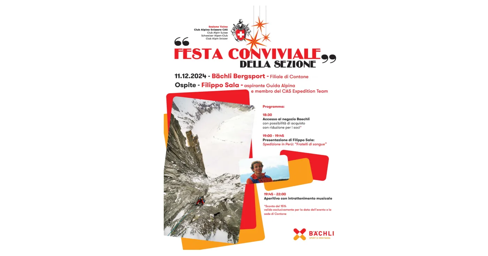
11.12.2024 – Festa conviviale della Sezione
Mercoledì 11.12.2024 vi aspettiamo dalle 18:30 da Bächli Sport a Contone. Di seguito il programma completo: FESTA CONVIVIALE CAS – 02
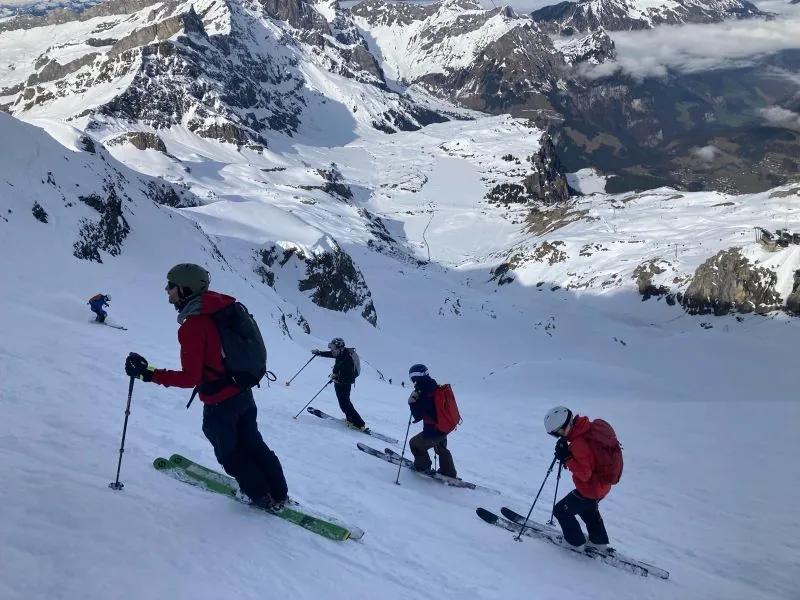
Mar 10 dicembre 2024, ore 19:00 – Serata di presentazione del corso tecnica di sci fuori pista – Canvetto Luganese
Serata di presentazione del corso “tecnica di sci fuori pista”, edizione 2025. Ulteriori informazioni disponibili in questo link: Corso sci fuori pista

Sab. 30 novembre 2024 – Campionati Ticinesi Giovanili di Arrampicata
Il prossimo sabato 30 novembre tornano i campionati ticinesi giovanili di arrampicata! Anche quest’anno il CAS ha il piacere di partecipare con alcuni dei propri giovani atleti. Quest’anno l’evento si terrà alla…

Dom. 22 settembre 2024 – Escursione in MTB alla capanna Adula
Vivi il tuo Ticino, in collaborazione con CAS Ticino, organizza per domenica 22 settembre 2024 un’escursione in mountain bike alla Capanna Adula. PROGRAMMA Domenica 22 settembre Diga Luzzone – Capanna Adula Ritrovo…

Sab. 21 settembre 2024 – Escursione per famiglie nella zona del Luzzone
Vivi il tuo Ticino, in collaborazione con CAS Ticino e Mountain Muses (Pierre Crivelli), organizza, sabato 21 settembre 2024, un’escursione nella zona del Luzzone. La giornata ha come obiettivo quello di far vivere una…
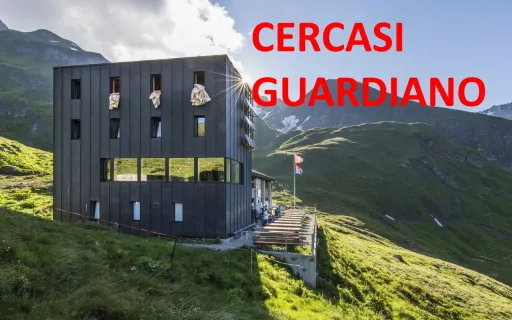
Concorso Capanna Michela-Motterascio
La sezione Ticino del CAS apre il concorso per l’assegnazione della capanna Michela-Motterascio, in valle di Blenio, dalla stagione 2025. I dettagli del bando sono definiti nel capitolato pdf scaricabile. Termine di…

Onsernone – Il primo Villaggio degli alpinisti del cantone Ticino
Originalità e tradizione caratterizzano l’Onsernone La famiglia dei Villaggi degli alpinisti svizzeri cresce. Dopo St. Antönien e il terzetto formato dai tre villaggi della Bassa Engadina di Lavin, Guarda e Ardez, ora…

Partecipa ora – in palio buoni CAS
Ogni mese in palio buoni CAS per un valore di CHF 1500.– Da maggio a fine settembre, iMpuls mette in palio buoni CAS del valore totale di 7500 franchi! Rispondi correttamente alla domanda del concorso e ogni mese potrai…

Torna la Red Bull Dual Ascent – Verzasca – 2 NOV. 2024
Il 2 novembre 2024 la diga della Val Verzasca, in Svizzera sarà per la terza volta teatro della gara di arrampicata a più tiri Dual Ascent. Uno spettacolo di arrampicata testa a testa senza precedenti! 20 tra i migliori…
Invito Assemblea 2023
Caro Socio abbiamo il piacere di invitarti alla 139.ma Assemblea Generale Annuale che avrà luogo venerdì 24 maggio 2024 alle ore 18:30 presso la sede del CAS TI a Lugano c/o Canvetto Luganese Via R. Simen 14B, Lugano a…
Corso base arrampicata su roccia
ATTENZIONE: si sono liberati alcuni posti per il corso base di arrampicata su roccia. Per le iscrizioni vedi link: https://casticino.ch/?page_id=53 DETTAGLI DEL CORSO: CORSO BASE di ARRAMPICATA su ROCCIA 2024
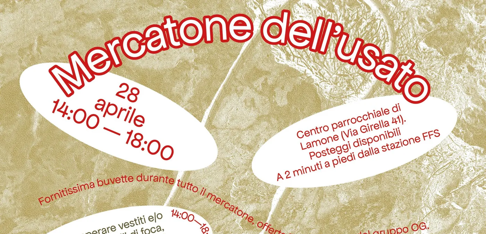
28 aprile (14:00 – 18:00) MERCATONE DELL’USATO + presentazione di e con Filippo Sala e cortometraggio
Non mancare al MERCATONE DELL’USATO proposto dal nostro gruppo GIOVANI. Alle 18:00 –> Presentazione di e con Filippo Sala: il team di spedizione del CAS e le sue ultime avventure nelle Alpi. Proiezione di un…
Ma 9 apr. 2024 Sera – Monitori/Colonna di soccorso – Gestione emergenza
Interessante serata aperta a tutti i monitori sulla Gestione delle emergenze. Per iscrizioni: https://ssl.dropnet.ch/casticino/gite/index.php?page=anmeldung&tourFID=1490

Grigliata di primavera (monitori e aiuto-monitori, aiutanti….etc)
Vi ricordiamo la grigliata dedicata a tutti i monitori, aiutomonitori e aiutanti del CAS Ticino. Iscrivetevi su droptour e invitate le vostre famiglie. Iscrizioni…
OG – Arrampicate a Finale Ligure (Italia) – PASQUA
Cari/e ragazzi/e, Desiderate partecipare alla quattro giorni di arrampicata con noi? Iscriviti sul sito del CAS Ticino: https://ssl.dropnet.ch/casticino/gite/index.php?page=detail&touren_nummer=1354. Di seguito trovate…
2022

CAPIGITA – Manuale utilizzo DropTours
Per facilitare il compito dei capigita nell’utilizzo del gestionale gite, abbiamo creato un manuale utente indirizzato ai capigita per l’utilizzo di DropTours. Il manuale è reperibile nella sezione “Programma” del menu…
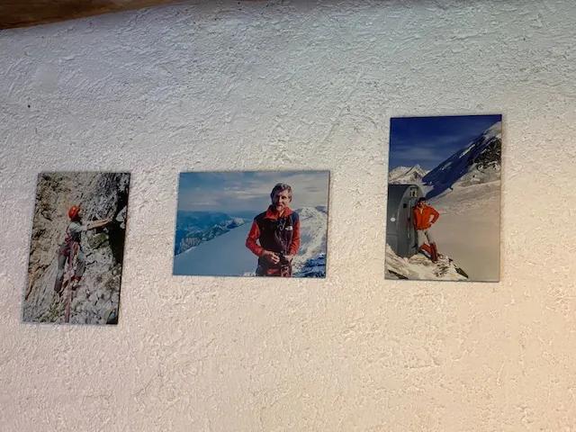
Lunedì 30 maggio alla Baita del Luca sono stati ricordati Luca Sganzini, Delio Ossola e Fabrizio Scanavino
Lunedì 30 maggio alla Baita del Luca sono stati ricordati Luca Sganzini, Delio Ossola e Fabrizio Scanavino in occasione della posa di 3 loro nuove foto alla presenza del fotografo e di qualche responsabile (o ex) della…
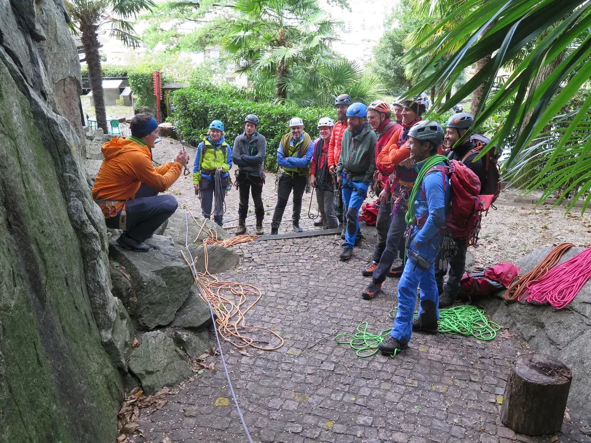
Domenica 12 giugno – Corso di aggiornamento estivo per soci
Cari soci, vi ricordiamo il corso di aggiornamento di domenica 12 giugno, con tema: preparazione di una gita T4, T5, T6 fuori dai sentieri marcati – 1.5 ore percorso materiale realizzazione della gita scelta del…
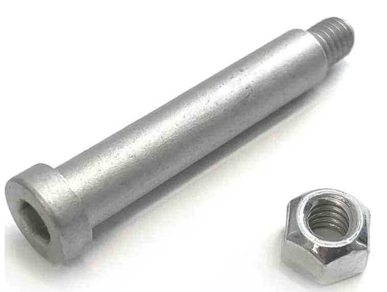
UPI – Avviso di sicurezza della EDELRID a proposito delle viti ad anello a D (Screw D-Ring) per attrezzatura da arrampicata, causa pericolo di caduta
UPI – Avviso di sicurezza della EDELRID a proposito delle viti ad anello a D (Screw D-Ring) per attrezzatura da arrampicata, causa pericolo di caduta Berna, 23.03.2022 – In collaborazione con l’Ufficio prevenzione…

Sondaggio – cambiamento climatico/alpinismo
Vi saremmo grati se entro giugno poteste investire pochi minuti del vostro tempo per rispondere al seguente sondaggio: VAI AL SONDAGGIO TESI DI MASTER: “Come influisce il cambiamento climatico sull’alpinismo e lo…
Invito Assemblea 2021
Caro Socio abbiamo il piacere di invitarti alla 137.ma Assemblea Generale Annuale che avrà luogo venerdì 8 aprile 2022 alle ore 18:30 presso la sede del CAS TI a Lugano c/o Canvetto Luganese Via R. Simen 14B, Lugano a…

Il Rifugio del Parco Nazionale della Val Grande “Parpinasca” CERCA GESTORE
Il Rifugio del Parco Nazionale della Val Grande “Parpinasca”, situato ai piedi dell’area protetta in Comune di Trontano, è alla ricerca di nuovi gestori. Il bando di gestione è pubblicato sul sito del Parco ove è…
2021
Cena di Natale 15.12.2021
In virtù dei rischi “Covid-19” abbiamo deciso di confermare l’incontro del 15.12.2021 in modo “soft”. Dettagli Tradizionale ritrovo per scoprire il programma gite 2021. Servito aperitivo standing dinner sotto portico…
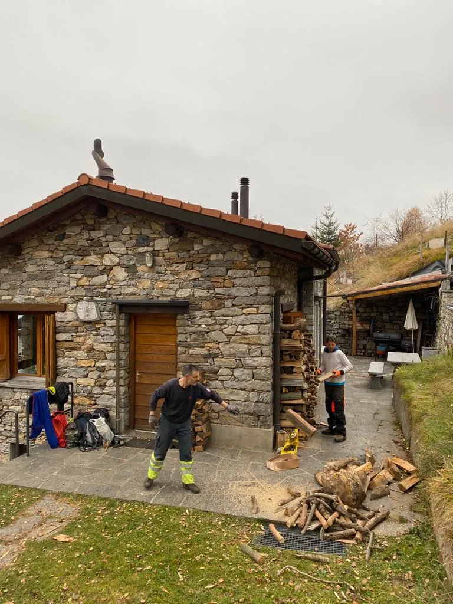
Baita del Luca – stagione invernale + lavori di manutenzione
Ricordiamo a tutti che anche durante la stagione invernale è possibile pernottare alla Baita del Luca (riservazione obbligatoria, link). Weekend dedicato a creare calore e altri piccoli lavori di manutenzione.

Giovedì prossimo: serata teorica, pianificazione gita e materiale
Cari soci, ci sono ancora alcuni posti liberi per la serata teorica di giovedì prossimo con tema:pianificazione gita e materiale. Ore 20.00 al Canvetto Luganese. Iscrizioni al link…
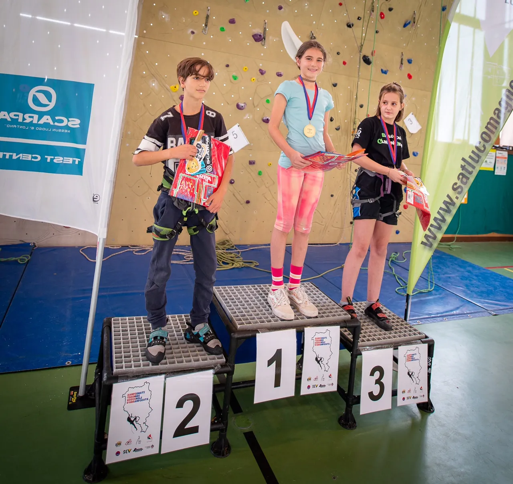
Campionati Ticinesi Giovanili d’arrampicata
Domenica 24 ottobre i nostri OG hanno partecipato con entusiasmo ai Campionati ticinesi giovanili d’arrampicata, presso il PoliSport di Olivone. Un grande complimento a tutti i partecipanti, ai monitori ed aiuto…

Palestra chiusa dal 4 al 10 ottobre
La palestra di arrampicata di Cornaredo sarà chiusa dal 4 al 10 ottobre (compreso) per il mancato rispetto delle norme in vigore
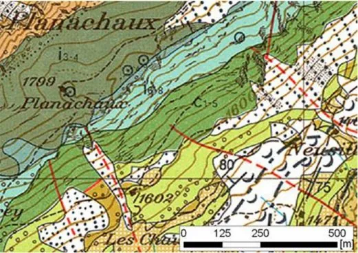
“Serata teoria cartinografia” posticipata a Gio 14 ott. 2021
“Serata teoria cartinografia” posticipata a Gio 14 ott. 2021 alle ore 19:00. Per chi è interessato, vi sono ancora posti liberi. Per iscrizioni vedi programma gite

Serata con l’alpinista Matteo Della Bordella
Vi invitiamo alla serata con l’alpinista Matteo Della Bordella. Organizzata dal CAS Locarno nell’ambito dei festeggiamenti per i 100 anni del sodalizio. 17 Settembre ore 20:00 presso Gran Rex, Locarno Certificato COVID…
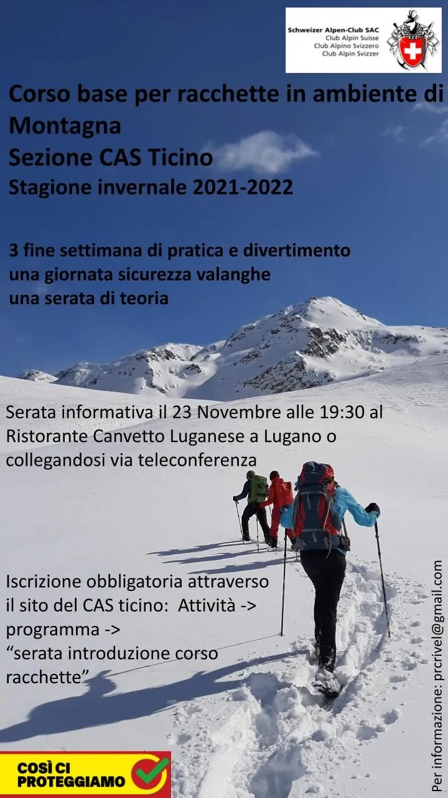
Corso di racchette 2022
Sono aperte le iscrizioni al corso di racchette 2022. Per maggior dettagli vedi: https://www.casticino.ch/corso-racchette/

Ancora posti disponibili per la gita del 4 e 5 settembre al Cristallina
Con gli amici del SAC Weissenstein, abbiamo pianificato questa gita aperta a tutti…. Avvicinamento alla capanna Cristallina, passando per il Passo San Giacomo, il Passo Grandinagia e il canale del Becco con una puntata…
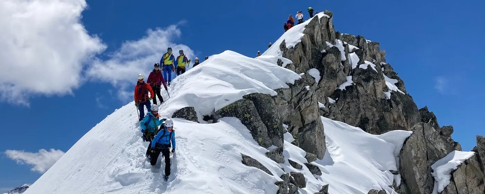
Sabato 14 agosto 2021 – Incontro con uno dei più grandi alpinisti italiani
Sabato 14 agosto 2021 alle 20:30 a San Bernardino Incontro con Fausto De Stefani, secondo alpinista italiano dopo Reinhold Messner ad aver scalato tutte le quattordici vette superiori agli 8000 metri. Entrata libera…
Convocazione Assemblea 2020
Caro Socio abbiamo il piacere di invitarti alla 136.ma Assemblea Generale Annuale che avrà luogo venerdì 11 giugno 2021 alle ore 18:00 c/o Cantori delle Cime Via alla Stampa 4, Canobbio a seguire, grigliata conviviale…
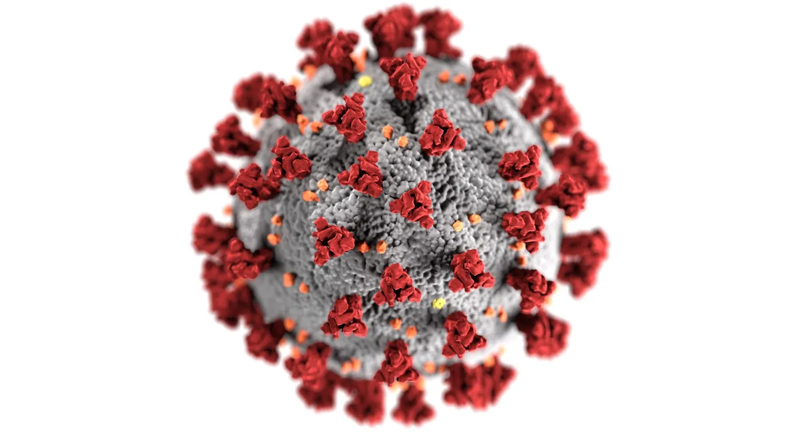
Gen. 2021 / COVID-19 / Aggiornamenti
Carissimi amanti della montagna, È nostra intenzione continuare a proporre attività all’aria aperta. Riteniamo che i benefici legati allo svolgimento di attività nella natura superino i rischi. Per rispettare le norme…
2020
Come cambiano gli strumenti di pianificazione
Colui che frequenta la montagna ha da sempre cercato di pianificare il suo progredire e le sue escursioni utilizzando quello che la tecnica del tempo proponeva. Le biografie dei grandi sono un pozzo di esempi che vanno…
Ricerca di idee
La ricerca di idee è un processo personale, complesso. Possiamo utilizzare i motori di ricerca ( www.google.com ), i social ( www.facebook.com , www.instagram.com ) utilizzando come criteri di ricerca: nomi di montagne…
Preparazione a tavolino
Siamo al caldo, tranquilli, abbiamo fissato la meta da raggiungere e ora prepariamo la gita nel dettaglio. In questa fase, cerchiamo informazioni su condizioni, terreno e fattore umano prendendoci il tempo necessario…
Prima di incamminarsi e cammin facendo
È giunto il giorno della gita. In questa fase della pianificazione verifico le informazioni in mio possesso con quello che vedo nella realtà. La mia capacità di osservazione diventa prioritaria. Condizioni (meteo e…
Cammin facendo, in un punto ben preciso
La giornata avanza, i metri di dislivello si accumulano, l’imprevisto è in agguato. La metodica, con il suo ciclo continuo di analisi sistematica delle condizioni, del terreno e del fattore umano confrontate con la…
Feedback
Il processo di feedback, importante alla fine di ogni gita, ha come scopo la raccolta e il riordino delle informazioni necessarie per capire come fare meglio la prossima volta (si può sempre migliorare). È importante…
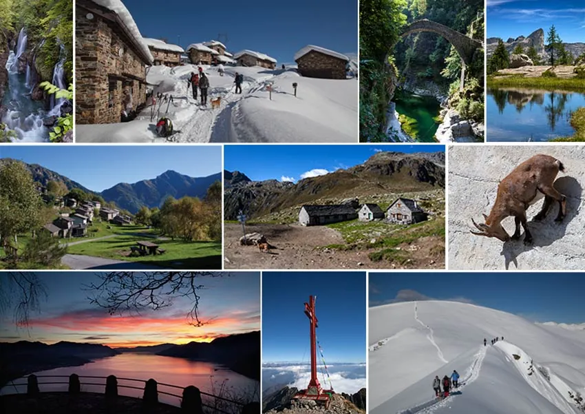
Programma gite 2021
Il programma gite 2021 è ora disponibile on line. A dipendenza delle normative in vigore le gite potranno subire delle modifiche e i posti saranno limitati. La palestra di Cornaredo è sempre aperta con limitazioni di…
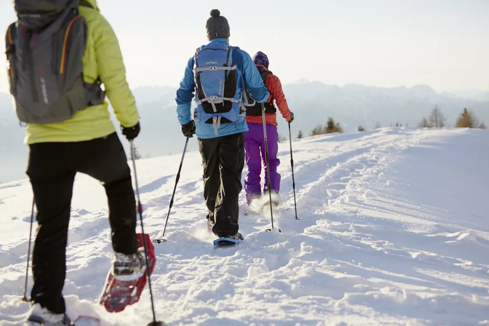
Corso di racchette 2020 / 2021
Caro Socio ti infomiamo che il numero massimo di partecipanti al corso di racchete è stato ridotto a 13 (per rispettare le normative in vigore). Ci sono ancora perciò pochi posto liberi. Se sei interessato, affrettati…
Convocazione Assemblea Sezionale
Caro Socio abbiamo il piacere di invitarti alla 135.ma Assemblea Generale Annuale che avrà luogo venerdì 25 settembre 2020 alle ore 20.30 c/o Aula Magna di Trevano, Supsi Via Trevano, Canobbio Allegato: Convocazione
Attività Sezionale
A partire dal 6 giugno sarà nuovamente possibile frequentare le attività della Sezione anche in gruppi superiori a 5 pesone. I provvedimenti di distanza sociale e di igiene rimangono in vigore. Potrete quindi…
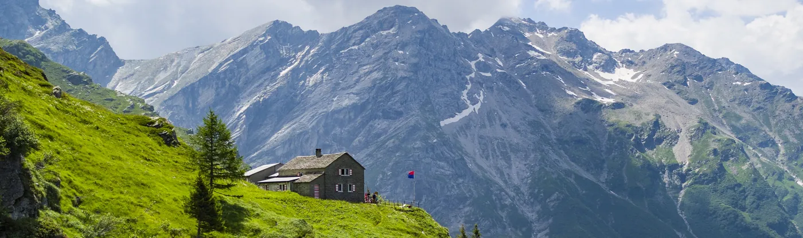
Inizia la stagione estiva delle capanne
Con le ultime decisioni prese dal Consiglio Federale, può iniziare la stagione estiva delle capanne A partire dal 6 giugno sarà nuovamente possibile frequentare le capanne in gruppi superiori a 5 persone e godere della…
Assemblea Sezionale
Cari Soci, vi informiamo che l’assemblea Sezionale si terrà nella seconda metà del mese di settembre. Presto sarete informati su ulteriori dettagli relativi all’evento.
Mag. 2020 / COVID-19 / Aggiornamenti
Il CAS Centrale ha diramato le seguenti informazioni che vi riportiamo con piacere e un pizzico di sollievo. In occasione della conferenza stampa del 29 aprile 2020, il Consiglio federale ha annunciato l’allentamento di…
Feb. 2020 / Serata di formazione
Per frequentare la montagna sempre più con maggiore consapevolezza, la nostra Sezione organizza 5 serate teoriche aperte a tutti i nostri soci. Archiviata quella dedicata alle valanghe e alla nivologia , il prossimo…
2019
Ott. 2019 / Aperte le iscrizioni al corso di scialpinismo
Non solo divertimento sciando sui pendii immacolati, ma anche – e soprattutto – tanta formazione e didattica pratica per apprendere le nozioni di sicurezza e pronto intervento in ambiente alpino invernale. Aperte da ora…
Ott. 2019 / Aperte le iscrizioni per corsi e attività in montagna
La Commissione Giovani propone corsi e attività di arrampicata, scialpinismo e alpinismo per bambini e ragazzi tra i 10 e i 22 anni. Un’ottima opportunità per imparare a conoscere la montagna alpina divertendosi in…
Ott. 2019 / 4 giorni d’arrampicata per OG
Per chiudere in bellezza la settimana del Campo Tencia, ci troviamo un fine settimana lungo ai Denti della Vecchia. Il Week-End é aperto a tutti gli OG e ai loro amici.Denti della vecchia 2019
Set. 2019 / Corso Arrampicata Indoor
Cari/e ragazzi/e, la Commissione Giovani del CAS Ticino ha il piacere di comunicarvi che, in collaborazione con il gruppo scoiattoli Denti della Vecchia, ripropone il corso di arrampicata sportiva indoor per la stagione…
Festival di narrazione ad Arzo
Siete cordialmente invitati a partecipare al XX Festival Internazionale di narrazione che si terrà dal 29 agosto al 01 settembre ad Arzo. In programma c’è anche un percorso di teatro e alpinismo sostenuto dalla nostra…
Escursione ornitologica con G. Marcolli e O. Ostinelli
Giovedì 18 luglio dalle 07.30 alle 14.00 circa ci sarà un’escursione ornitologica alla Capanna Campo Tencia. Per informazioni: Escursione ornitologica
Il Ticino con un ponte aiuta il Nepal
Siete cordialmente invitati a partecipare all’evento organizzato dall’associazione “Mani per il Nepal” che si terrà domenica 14 luglio presso la Capanna Monte Bar. Maggiori informazioni le trovate nel link: Il Ticino…
Abbonamento mobile CAS-Swisscom
In montagna con la copertura migliore! Per maggiori informazioni: CAS-Swisscom
Nuovo sito del CAS Centrale, Portale Gite e account privato
04-09-2018 Il CAS Centrale ha recentemente pubblicato la versione Beta del nuovo portale Internet, questo permette anche la gestione di un’area privata da parte di ogni socio. Tramite l’identificativo PUK che si trova…
2018
Club Alpino Svizzero sezione Ticino
Con quasi 2.500 soci, la Sezione ha un’attività molto varia, in grado di suscitare l’interesse di tutte le età, dai più piccini agli anziani. Vengono, infatti, proposte gite di escursionismo, d’alpinismo, di rampichino…
L’uomo e la tecnologia in alta montagna
23-01-2019 Sportech vi invita a partecipare alla conferenza di Hervé Barmasse che si terrà mercoledì 23 gennaio 2019 alle ore 20.00 presso il Centro sportivo nazionale della gioventù di Tenero. Ingresso libero. È…